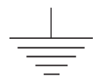

자동차차체수리기능사 (2009-09-27 기출문제)
1과목: 자동차공학
1. 자동차의 여유 구동력에 관한 설명으로 틀린 것은?
- 최대구동력과 주행저항의 차이이다.
- 최고속도에서의 여유구동력은 영(0)이다.
- 여유구동력은 가속이나 구배에서 사용된다.
- 최고속도에서의 여유구동력은 최대값이 된다.
(정답률: 74%)

2. 배기관의 배압이 상승하는 원인으로 맞는 것은?
- 배기관의 막힘
- 오버사이즈 소음기
- 2개로 설치된 테일 파이프
- 새로 장착한 정품의 머풀러
(정답률: 93%)
3. 자동차의 수냉식과 공랭식 냉각장치 부품 중 공냉식 냉각계통에 있는 것은?
- 압력식 캡
- 서모스탯
- 방열 핀
- 라디에이터
(정답률: 75%)
4. 트랙프레임의 일반적인 보강판 단면형이 아닌 것은
- ㅁ형
- ㅅ형
- ㄷ형
- ㄴ형
(정답률: 85%)
5. 일은 어떤 물체에 일정 크기의 힘을 작용시켜 힘의 방향으로 일정거리만큼 움직였을 때, 힘과 변위의 곱으로 나타난다. 다음 중 일을 나타내는 단위는?
- km/s
- kgf/s
- kgf·m
- kgf/m
(정답률: 73%)
6. 자동차에서 토인 조정은 무엇으로 하는가?
- 타이로드
- 스트러트 바
- 컨트롤 암
- 스태빌라이저 바
(정답률: 89%)
7. 천장 외피의 효과와 가장 거리가 먼 것은?
- 방열
- 방음
- 방화
- 미관
(정답률: 74%)
8. 전기회로에서 아래 그림이 나타내는 심벌의 명칭은?

- 릴레이
- 접지
- 전구
- 퓨즈
(정답률: 78%)
9. 외력을 제거하면 원래의 상태로 돌아가는 것을 무엇이라 하는가?
- 탄성변형
- 소성변형
- 항복점
- 인장강도
(정답률: 82%)
10. 자동차기관의 연료소비율을 향상시키기 위한 대책이 아닌 것은?
- 동력전달장치의 마찰감소
- 차제의 공기저항 감소
- 차량 중량 저감
- 기관 냉각수 온도 저감
(정답률: 85%)
11. 모재의 열변형이 거의 없으며, 이종 금속의 용접이 가능하고 미세하고 정밀한 용접을 할 수 있으며, 비접촉식 용접방식으로 모재 손상을 주지 않는 특징을 가진 용접은?
- 산소용접
- 전기용접
- 레이저 용접
- 스터드용접
(정답률: 68%)
12. 특정한 모양을 가진 물체를 도시한 그림으로 가장 옳은 것은? (문제 오류로 문제 및 보기 내용이 정확하지 않습니다. 정확한 내용을 아시는 분께서는 오류신고를 통하여 내용 작성 부탁드립니다. 정답은 1번입니다.)
- 복원중
- 복원중
- 복원중
- 복원중
(정답률: 77%)
13. 다음 중 가장 경도가 높은 조직은?
- 시멘타이트
- 마르텐사이트
- 퍼얼라이트
- 오스테나이트
(정답률: 70%)
14. 자동차용 안전유리 중 접합유리에 속하는 것은?
- 부분 강화유리
- 표준 강화유리
- 플라스틱 유리
- 표준 유리
(정답률: 83%)
15. 100A이상 300A미만의 아크용접 작업시 알맞은 차광유리의 규격은?
- 6 ~ 7번
- 8 ~ 9번
- 10 ~ 12번
- 13 ~ 14번
(정답률: 60%)
16. 아크 용접봉에서 피복제의 작용이 아닌 것은?
- 슬랙이 되어 융융금속을 보호하고 냉각속도를 느리게 한다.
- 심선보다 빨리 녹으며, 산성 분위기를 만든다.
- 융융금속과 반응하여 탈산 정련작용을 한다.
- 용착금속을 양호하게 하기 위해서 작용된다.
(정답률: 65%)
17. 가스 용접에서 모재와 불꽃과의 거리는 대략 어느정도로 하는 것이 좋은가?
- 0 ~ 1mm
- 2 ~ 3mm
- 5 ~ 7mm
- 10 ~ 15mm
(정답률: 60%)
18. 기공 또는 용융 금속이 튀는 현상이 생겨 용접한 부분의 바깥 면에 나타나는 작고 오목한 구멍을 무엇이라 하는가?
- 플래시(flash)
- 피닝(peening)
- 플럭스(flux)
- 피트(pit)
(정답률: 59%)
19. 하나의 고용체로부터 2개의 고체가 일정한 비율로 동시에 나온 혼합물을 무엇이라고 하는가?
- 공정
- 포석정
- 공석정
- 편석정
(정답률: 69%)
20. 기계제도를 할 때 도면에 기입하여야 할 것이 아닌 것은?
- 용도
- 가공정밀도
- 재료
- 치수
(정답률: 62%)
2과목: 자동차차체정비
21. 전기용접 할 때 발생 열량으로 알맞은 식은? (단, H(Cal), I(A), R(Ω), t(sec))
- H = (0.24)2IRt
- H = 0.24I2RT
- H = 0.24IR2t
- H = 0.24IRt2
(정답률: 81%)
22. 다음 합금 중에서 구리에 아연 8~20%를 첨가한 것은?
- 문츠메탈
- 델타메탈
- 톰백
- 포금
(정답률: 54%)
23. 금속 판재를 냉각 가공하면 결정입자는 어떤 조직으로 되는가?
- 입상조직
- 섬유조직
- 편상조직
- 층상조직
(정답률: 61%)
24. 자동차의 구조 중 주로 차의 내부 패널용으로 사용되는 강판은?
- 열간압연 강판
- 열간압연 고장력 강판
- 냉간압연 강판
- 알루미늄 강재
(정답률: 59%)
25. 점용접에서 접합면의 일부가 녹아 바둑알 모양의 단면으로 된 부분을 무엇이라 하는가?
- 스폿(spot)
- 너겟(nugget)
- 포일(foil)
- 돌기(projection)
(정답률: 79%)
26. 트렁크 리드 탈거 작업에 속하지 않는 것은?
- 리드 어셈블리
- 리드힌지 마운팅 볼트
- 리드레치 및 메인 와이어 링
- 사이드 가니쉬
(정답률: 84%)
27. 승용차 손상 진단 시 자동차 앞면 좌·우측 끝에 외력이 가해졌을 경우 우선 1차적인 점검부위에 해당되는 않는 것은?
- 프론트 사이드멤버와 크로스멤버
- 라디에이터 서포트 중심과 좌우부위
- 후드의 평면부위와 좌우부위
- 쿼터 판넬 부위
(정답률: 67%)
28. 다음 중 언더바디(under body) 패널에 속하지 않는 것은?
- 프런트 플로어
- 리어 크로스 멤버
- 센터 필러 패널
- 사이드 멤버
(정답률: 57%)
29. 차체 치수도의 표시법에서 직선거리치수가 아닌것은?
- 엔진 룸
- 평면치수
- 언더바디
- 바디사이드
(정답률: 47%)
30. 생산라인에서 신차 도장의 일반적인 작업방법을 순서대로 바르게 표시한 것은?
- 표면처리 - 표면수정 - 중간도장 - 마지막도장
- 표면가공 - 초벌도장 - 표면수정 - 마지막도장
- 표면처리 - 초벌도장 - 중간도장 - 마지막도장
- 표면가공 - 수정도장 - 표면수정 - 마지막도장
(정답률: 74%)
31. 차체 수리시 패널부를 CO2용접기로 맞대기 이음을 하려고 한다. 가장 알맞은 방법은?
- 스포트 용접
- 연속 용접
- 플러그 용접
- 펠릿 용접
(정답률: 58%)
32. 건조로에 있어 보편적인 열원의 전달 방식은?
- 대류와 복사
- 전도와 대류
- 복사와 전도
- 전도와 직사
(정답률: 83%)
33. 지그 시스템을 사용하는 프레임 수정기 사용 방법의 설명 중 잘못된 것은?
- 차체와 지그를 연결할 때에 볼트를 사용한다.
- 지그는 차종마다 같고 스트럿타워만 교체한다.
- 크로스멤버의 번호와 일치하는 지그를 사용한다.
- 지그는 용접 작업을 하기 전에 정확하게 가조립을 할 수 있다.
(정답률: 77%)
34. 손상차체의 계측작업에 사용되는 계측기의 종류가 아닌 것은?
- 센터링 게이지
- 유니버셜 메저링 시스템
- 오토 폴 시스템
- 지그 벤치 시스템
(정답률: 55%)
35. 차체 용접에서 용입 불량의 원인은?
- 용접전류가 낮다.
- 용접 겹침이 너무 넓다.
- 와이어 공급률이 너무 느리다.
- 모재에 과도한 산소가 공급되었다.
(정답률: 57%)
36. 자동차 판금작업에 관한 설명으로 틀린 것은?
- 패널 부착 상태에 따라 일부를 절단하여 절단 이음 교환을 할 때가 있다.
- 절단 이음부는 맞대기 용접이나 겹침 용접을 한다.
- 강도가 필요한 부위는 겹침 용접이나 보강판을 넣어서 맞대기 용접을 한다.
- 용접은 상소용접을 주로 하여 강판에 영향을 주지 않도록 한다.
(정답률: 58%)
37. 판금 제품을 보강 또는 장식을 목적으로 옆벽의 일부를 볼록 나오거나 오목 들어가게 띠를 만드는 가공법은?
- 비딩(beading)
- 벌징(bulging)
- 플랜징(flanging)
- 컬링(curling)
(정답률: 75%)
38. 효과적인 프레임 교정술에서 힘의 성질로 옳은 것은?
- 물체의 중심을 벗어난 장소에 힘을 가하면 회전하려는 모멘트가 발생한다.
- 형태나 면적이 변화하는 부위에는 응력(힘)이 집중되어 파손이 되지 않는다.
- 사고차 수리시에 충격(힘)을 받는 가까운 부위부터 수리하여 복원한다.
- 순간적인 인장 작업을 하면 힘은 수리 차의 전체로 전달된다.
(정답률: 62%)
39. 스프레이건에서 방아쇠와 연동하여 분사되는 도료 토출량을 조절하는 부품은?
- 갭
- 니이들밸브
- 노즐
- 패턴조절장치
(정답률: 68%)
40. 손상된 차체를 절단하고 연강판으로 차체를 제작할 경우 손상된 차체보다 어느 정도 크게 제작하는 것이 적당 한가?
- 0.5 mm
- 1 mm
- 1.5 mm
- 2 mm
(정답률: 54%)
3과목: 안전관리
41. 커터(cutter)란 무엇을 하는 공구인가?
- 앵글 등을 쇠줄로 절삭한다.
- 갈고 깍아 내는데 쓰이는 공구이다.
- 철판을 절단한다.
- 도장작업을 하는데 쓰이는 공구이다.
(정답률: 74%)
42. 판금퍼티 작업에서 주걱과 피도면의 작업각도는 얼마가 적당한가?
- 5~15°
- 15~30°
- 30~45°
- 50~60°
(정답률: 52%)
43. 자동차 도어 록크 중 일반적으로 가장 많이 사용하는 방식은?
- 스핀들식
- 캠식과 슬라이드식
- 랙크피니언식과 훅크핀식
- 빗장과 코터식
(정답률: 71%)
44. 트램 트랙킹 게이지로 측정할 수 없는 부분은?
- 프레임 하체부 서스펜션과 전동장치 부위
- 프레임의 일그러진 상태
- 프런트 사이드 멤버의 일그러짐이나 상·하로 휨 상태
- 프런트 사이드 멤버의 좌·우로 휨 상태
(정답률: 55%)
45. 가스 절단 시 산소의 순도가 저하될 때 나타나는 현상이 아닌 것은?
- 절단 속도 저하
- 산소 소비량 증대
- 슬렉의 박리성 양호
- 절단면의 거침
(정답률: 79%)
46. 연삭숫돌입자 중 탄화규소계 연삭재로서 초경합금, 유리 연삭용이며 녹색인 것은?
- A
- WA
- GC
- C
(정답률: 68%)
47. 프레임 센터링 게이지에 의해 측정할 수 없는 것은?
- 프레임의 상하 휨
- 프레임의 좌우 휨
- 프레임의 비틀림
- 프레임의 접속부 이완
(정답률: 79%)
48. 자동차 도료는 자동차를 어떤 목적에서 피복하기 위하여 수지, 안료, 첨가제 등을 써서 만든 액체나 고체이다. 도료의 목적에 맞지 않는 것은?
- 보호
- 미관
- 상품가치 향상
- 강도
(정답률: 64%)
49. 자동차 도료의 퍼티에 대한 설명으로 맞는 것은?
- 주제를 충분히 저어서 혼합한다.
- 한번에 두껍게 여러번 바른다.
- 주제와 경화제의 혼합비는 10 : 3~4이다.
- 패널 수정 후 패널면에 바로 바른다.
(정답률: 84%)
50. 벤치식 프레임 수정장비의 설명으로 맞는 것은?
- 계측기준은 바닥이다.
- 바닥에 레일이 설치되어 있다.
- 하체정비나 계측이 용이하다.
- 다른 작업장으로도 사용이 가능하다.
(정답률: 58%)
51. 유류화재시 소화방법으로 적합하지 않은 것은?
- 분말소화기를 사용한다.
- 물을 부어 끈다.
- 모래를 뿌린다.
- ABC 소화기를 사용한다.
(정답률: 94%)
52. 평균 근로자 500명인 직장에서 1년간 8명의 재해가 발생하였다면 연천인율은?
- 12
- 14
- 16
- 18
(정답률: 73%)
53. 수공구의 사용방법 중 잘못된 것은?
- 공구를 청결한 상태에서 보관할 것
- 공구를 취급할 때에 올바른 방법으로 사용할 것
- 공구는 지정된 장소에 보관할 것
- 공구는 사용 전 · 후 오일을 발라둘 것
(정답률: 94%)
54. 연삭작업 시 지켜야 할 안전수칙 중 잘못된 것은?
- 보안경을 반드시 착용한다.
- 숫돌의 측면을 사용한다.
- 숫돌차와 연삭대 간격은 3mm 이하로 한다.
- 정상 회전속도에서 연삭을 시작한다.
(정답률: 76%)
55. 전동공구를 사용하여 작업할 때의 준수사항이다. 올바른 것은?
- 코드는 방수제로 되어 있기 때문에 물이나 기름이 있는 곳에 놓아도 좋다.
- 무리하게 코드를 잡아당기지 않는다.
- 드릴의 이동이나 교환시는 모터를 손으로 멈추게 한다.
- 코드는 예리한 걸이에도 절단이나 파손이 안되므로 걸어도 좋다
(정답률: 83%)
56. 연료 주입과 관련된 안전관리 측면에 대한 설명중 틀린 것은?
- 연료 주입구가 얼어서 열리지 않을 때는 주변의 얼음을 제거하고 빙점이 낮은 브레이크 액을 부어 녹인다.
- 차량의 외부 표면에 연료가 떨어지면 도장이 손상될 수 있다.
- 연료 주입구 캡을 닫을 때는 항상 안전하게 잠겼는 지 확인해야 한다.
- 연료를 주입하기 전에 항상 시동을 끄고 연료 주입구 주변에 화기를 가까이 하면 안 된다.
(정답률: 85%)
57. 스포트 드릴 커터의 드릴 끝 날을 만들어 줄 때 주의사항으로 틀린 것은?
- 드릴 날의 끝 부분을 천천히 들어 올리면서 날 끝의 경사를 만든다.
- 연마할 때 너무 무리하게 힘을 주게 되면 날 끝 부위가 타서 변색이 된다.
- 드릴 날의 센터 부분을 평면으로 연마한다.
- 드릴 날을 회전시킬 때 드릴 날의 중심이 연삭기의 중심으로 부터 벗어나지 않게 한다.
(정답률: 64%)
58. 산소-아세틸렌 가스 용접시 가스의 압력은 얼마로 조정하는가?
- 산소 : 0.5~1kgf/cm2, 아세틸렌 : 0.5~1kgf/cm2
- 산소 : 1~2kgf/cm2, 아세틸렌 : 0.5~1kgf/cm2
- 산소 : 2~5kgf/cm2, 아세틸렌 : 0.2~0.5kgf/cm2
- 산소 : 5~10kgf/cm2, 아세틸렌 : 0.2~0.5kgf/cm2
(정답률: 54%)
59. 소음과 진동이 많이 발생하는 콤프레셔의 설치 장소에 대한 설명 중 적합하지 않은 것은?
- 습기가 적은 장소에 설치한다.
- 수평이고 탄탄한 마루면 위에 설치한다.
- 온도가 쉽게 오르지 않고, 먼지나 불순물이 적은 장소에 설치한다.
- 소음과 진동으로 시끄러우므로 작업장에서 멀고, 외부의 좁고 구석진 장소에 설치한다.
(정답률: 89%)
60. 귀마개의 선정조건이 아닌 것은?
- 귀(외이도)에 잘 맞을 것
- 사용 중 심한 불쾌감이 없을 것
- 사용 중 쉽게 빠지지 않을 것
- 어느 정도 무게(중량)감이 있을 것
(정답률: 94%)